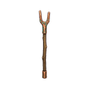
Bakır Asa T1
T1BüyücüSihirli bakır asa
İSTATİSTİKLER Normal +0
- Büyü saldırısı +12
- Düşüren
- Alfa Kurt Fısıldayan Orman
Zindan Lordu T1 Karanlık Mağara D1

Sihirli bakır asa
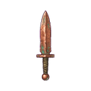
Hızlı bakır hançer
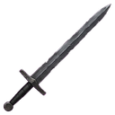
Basit bakır kılıç
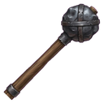
Ağır bakır topuz
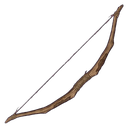
Basit bakır yay

Sağlam demir asa
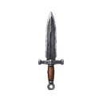
Keskin demir hançer

Dökme demir kılıç

Dökme demir topuz

Takviyeli demir yay
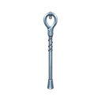
Parlatılmış çelik asa
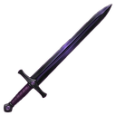
Keskin çelik kılıç
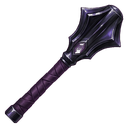
Sert çelik topuz
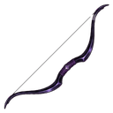
Uzun menzilli çelik yay
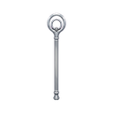
Mistik gümüş asa
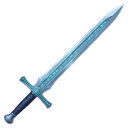
Gümüş kaplamalı bıçak
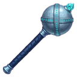
Parlak gümüş topuz
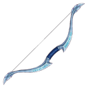
Büyülü gümüş yay
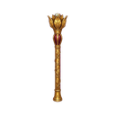
Süslü altın asa
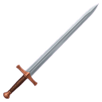
Kraliyet altın kılıcı
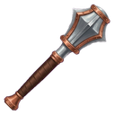
Ağır altın topuz
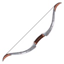
Soylu altın yay
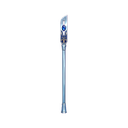
Yüksek seviyeli büyücü platin asası
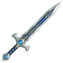
Ağır platin bıçak
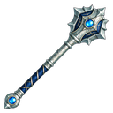
Güçlü platin topuz
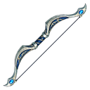
Ağır platin yay

Antik selestit asa

Elf selestit kılıcı

Sihirli selestit topuz

Antik selestit yay
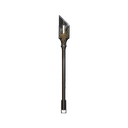
En üstün güç asası
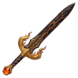
Yıkılmaz bıçak
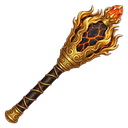
Ezici adamantit topuz
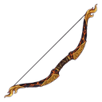
Büyük adamantit yay
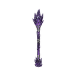
Karanlık Ateş Asası
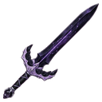
Volkanik cam bıçak
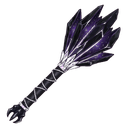
Yanan volkanik topuz
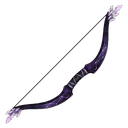
Cehennem ateşi obsidyen yayı
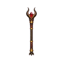
Ebedi Ejderha Asası
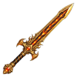
Üstün ejderha kılıcı
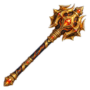
Efsanevi ejderha topuzu
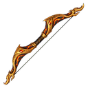
Ejderha kanatlı yay